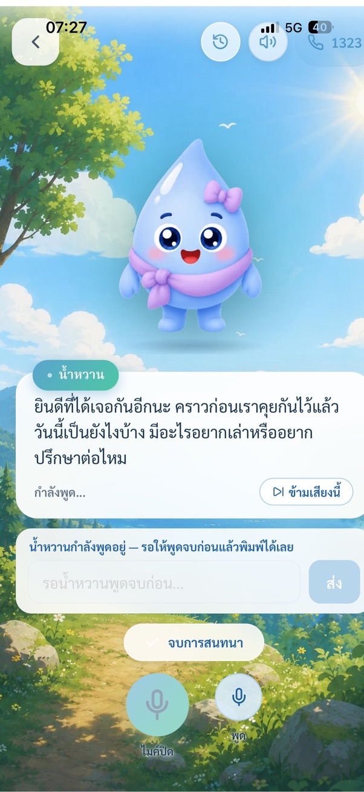

Back
PORTFOLIO
👋 สวัสดีครับผมชื่อนาย!!
นายชวภณ บุญจันทร์
มาจากจังหวัดสงขลา
ความชอบ --> Technology , Computer , Networking
งานอดิเรก
ผลงานล่าสุด (โปรเจคส่วนตัว)

ใจใส - ผลงานเว็ปแอปพลิเคชั่นสำหรับประเมิณและคัดกรองความเครียดและภาวะซึมเศร้าในวัยรุ่น